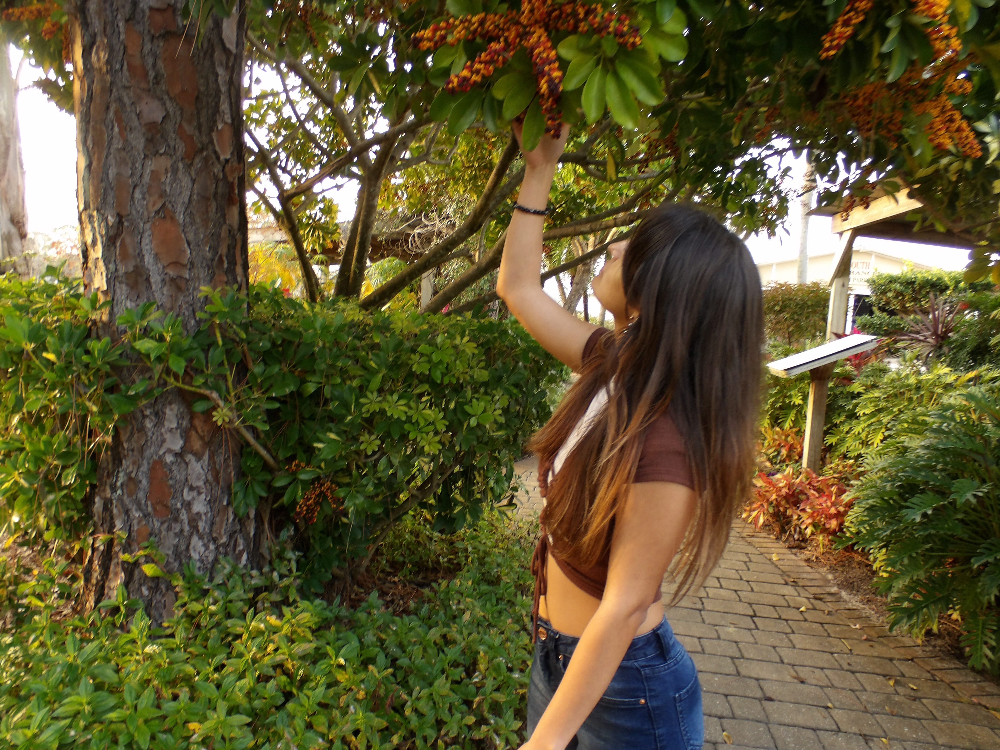
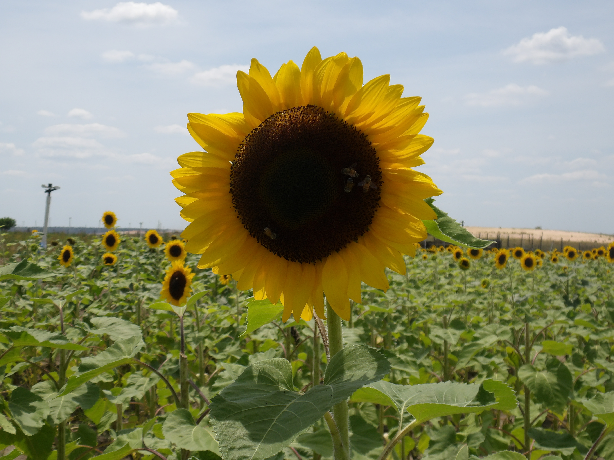
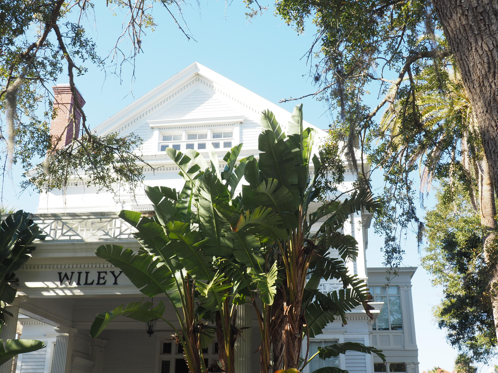

Hello, I'm Sabrina!
I am a Digital Media student interested in photography, video editing, and web design.
View My PhotographyAbout Me

I enjoy listening to music, fashion, and taking photos with my digital camera.
As a Digital Media student, I would like to build my portfolio using my creative skills in photography, video editing, and web design.
My Creative interests
- Photography
- Music and album visuals
- Fashion
- Video Editing
- Motion Design
Portfolio Inspiration
A website I use for creative inspiration is Pinterest because it allows users to create a visual representation of their ideas. It is great for creating mood boards, finding inspiration for designs, and creating aesthetics for any type of project.
Visit PinterestMy Photography



I took these images on my digital camera. My camera is a Minolta Pro Shot Digital Still Camera.